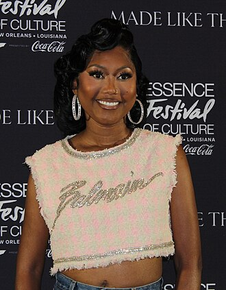

Muni Long
Priscilla Renea Hamilton, known professionally as Muni Long, is an American singer and songwriter from Gifford, Florida. Under her birth name, she signed with Capitol Records to release her debut studio album Jukebox (2009), which was met with positive critical reception despite limited commercial attention. She then spent the following decade co-writing songs for other artists, namely the singles "Promise This" by Cheryl, "California King Bed" by Rihanna, "Worth It" by Fifth Harmony, "Love So Soft" by Kelly Clarkson, "Imagine" by Ariana Grande, "Who Says" by Selena Gomez & the Scene, and the global hit "Timber" by Pitbull.
Complete Discography & Tracklists (24)
2020 Black Like This 🎵 7 Tracks
2021 Nobody Knows 🎵 7 Tracks
2022 Public Displays Of Affection: The Album 🎵 18 Tracks
2022 Baby Boo 🎵 5 Tracks
2024 Revenge 🎵 14 Tracks
2024 Made For Me (HoneyLuv AfroLuv Remix) 🎵 1 Tracks
2024 Made For Me (Remixes) 🎵 6 Tracks
2024 Made For Me (Lil Jon & Kronic Remix) 🎵 1 Tracks
2024 Made For Me (Yumbs’ Amapiano Remix) 🎵 1 Tracks
2024 Made For Me (Soul Train Performance Live) 🎵 2 Tracks
2025 Delulu 🎵 0 Tracks
No tracks registered.
2025 Useless (Without You) (Begging Remix) 🎵 1 Tracks
2026 Buy Me Something 🎵 0 Tracks
No tracks registered.